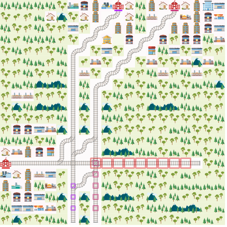
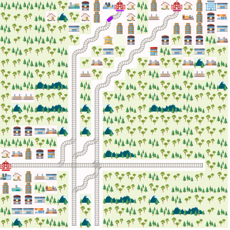

Sequential Agent¶
In this notebook implements a simple greedy agent that moves in the direction of the nearest destination based on the TreeObsForRailEnv.
import numpy as np
from flatland.envs.observations import TreeObsForRailEnv
from flatland.envs.rail_env import RailEnv
from flatland.envs.rail_generators import complex_rail_generator
from flatland.envs.predictions import ShortestPathPredictorForRailEnv
from flatland.envs.schedule_generators import complex_schedule_generator
from flatland.utils.rendertools import RenderTool
from IPython.display import clear_output
import PIL
%matplotlib inline
def render_env(env,wait=True):
env_renderer = RenderTool(env, gl="PILSVG")
env_renderer.render_env()
image = env_renderer.get_image()
pil_image = PIL.Image.fromarray(image)
clear_output(wait=True)
display(pil_image)
def min_gt(seq, val):
"""
Return smallest item in seq for which item > val applies.
None is returned if seq was empty or all items in seq were >= val.
"""
min = np.inf
idx = len(seq) - 1
while idx >= 0:
if seq[idx] >= val and seq[idx] < min:
min = seq[idx]
idx -= 1
return min
class OrderedAgent:
def __init__(self):
self.action_size = 5
def act(self, state, eps=0):
"""
:param state: input is the observation of the agent
:return: returns an action
"""
distance = []
for direction in TreeObsForRailEnv.tree_explored_actions_char:
try:
distance.append(state.childs[direction].dist_min_to_target)
except:
distance.append(np.inf)
distance = np.array(distance)
min_dist = min_gt(distance, 0)
min_direction = np.where(distance == min_dist)
if len(min_direction[0]) > 1:
return min_direction[0][-1] + 1
return min_direction[0] + 1
np.random.seed(2)
x_dim = 20 # np.random.randint(8, 20)
y_dim = 20 # np.random.randint(8, 20)
n_agents = 3 # np.random.randint(3, 8)
n_goals = n_agents + np.random.randint(0, 3)
min_dist = int(0.75 * min(x_dim, y_dim))
env = RailEnv(width=x_dim,
height=y_dim,
rail_generator=complex_rail_generator(nr_start_goal=n_goals, nr_extra=5, min_dist=min_dist, max_dist=99999, seed=0),
schedule_generator=complex_schedule_generator(),
obs_builder_object=TreeObsForRailEnv(max_depth=1,
predictor=ShortestPathPredictorForRailEnv()),
number_of_agents=n_agents)
env.reset()
render_env(env)

def run_episode(env, agent, render = True):
env_renderer = RenderTool(env)
max_steps = 100 * (env.height + env.width)-1
action_dict = dict()
# Reset environment
obs, info = env.reset(regenerate_rail = False,regenerate_schedule = False)
done = env.dones
env_renderer.reset()
frame_step = 0
score = 0
# Run episode
for step in range(max_steps):
# Action
acting_agent = 0
for a in range(env.get_num_agents()):
if done[a]:
acting_agent += 1
if a == acting_agent:
action = agent.act(obs[a])
else:
action = 4
action_dict.update({a: action})
# Environment step
obs, all_rewards, done, _ = env.step(action_dict)
for agent_handle in env.get_agent_handles():
score += all_rewards[agent_handle]
print('Timestep {}, total score = {}'.format(step, score))
if done['__all__']:
print('All done')
break
# Render
if render:
render_env(env)
else:
clear_output()
run_episode(env,OrderedAgent())

Timestep 68, total score = -126.0
All done
class RandomController:
def __init__(self, action_size):
self.action_size = action_size
def act(self, observations):
actions = dict()
for agent_handle, observation in enumerate(observations):
action = np.random.randint(self.action_size)
actions.update({agent_handle: action})
return actions
random_agent = RandomController(5)
run_episode(env,random_agent,False)
Timestep 599, total score = -1800.0
All done